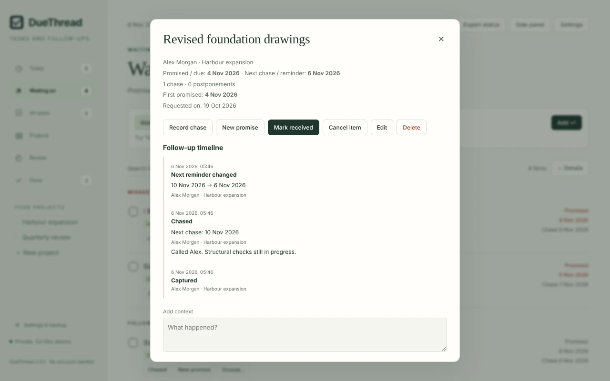
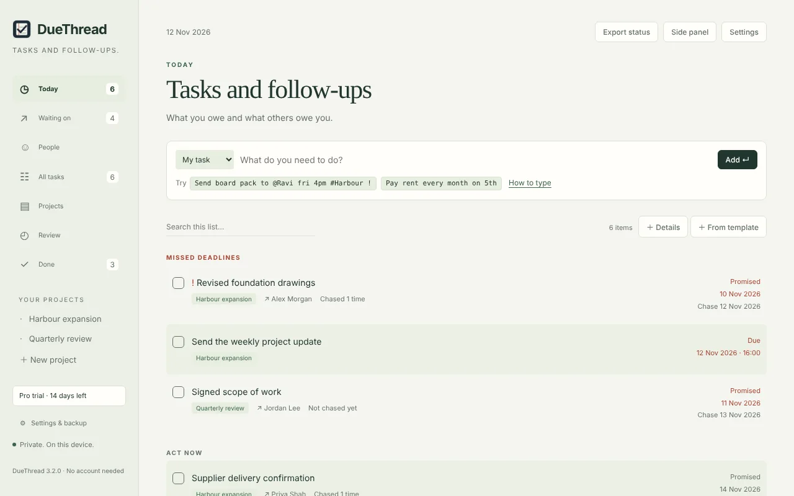
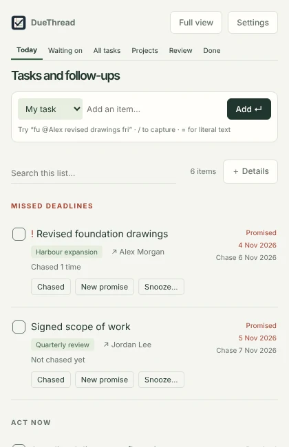
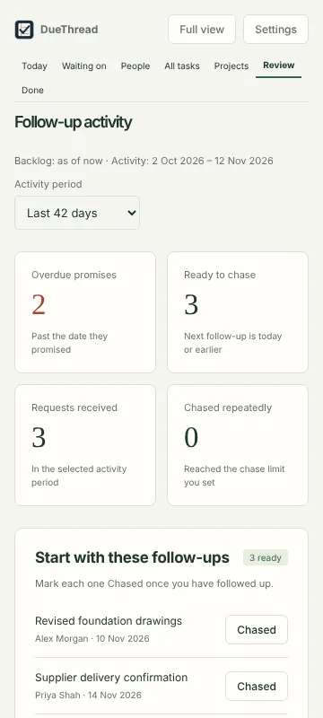
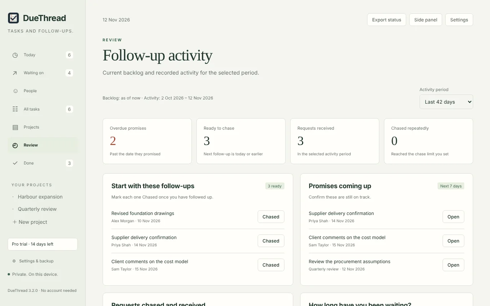

The promise and the chase are different dates
When a supplier promises revised drawings by Friday, Friday is the deadline. You might want to check in on Wednesday. Most task lists hold one date, so one of those gets lost.
DueThread records both. Chasing moves the next chase date, not the deadline. If the date slips, you record a new promise and the first one stays in the item's history.

Today, in one list
Missed deadlines come first, followed by the follow-ups to chase today and the tasks you owe. Each item can be marked chased, given a new promise or snoozed from the list.
Type an item in one line. fu @Alex revised drawings fri records the person and sets Friday as the chase date. A preview shows how the dates were read before anything is added.

Capture without leaving the page
- Open DueThread from the toolbar, or press Alt+Shift+D.
- Keep it in Chrome's side panel, next to the email or document you are working from.
- Select text on any page, right-click and add it as a task or follow-up, with a link back to the page.
- Type
dut, a space and your item in the address bar.


See what is stuck
The review shows what is past its promised date, what is ready to chase, what has arrived in the period you choose, and which requests you have chased repeatedly without result.
Projects that have gone quiet are flagged. A project status update can be copied straight into an email or report.

Built to stay out of the way
Reminders on your terms
Deadline and chase reminders run separately. Choose gentle or persistent reminders, set quiet hours and get a morning summary of the day.
Private by design
No account and no sign-in. Everything stays in your Chrome profile on your computer. Nothing is sent to any server, and there are no ads or analytics.
Projects that file themselves
Give a project its names and short codes, and new items that mention them are filed automatically. You can always move an item.
Your data, your copy
Export a backup file at any time and import it on another computer. Removing the extension removes its data, so export first.
DueThread Pro is in development. It adds contacts, follow-ups with several people, a view for each person, paste-to-tasks and deeper reports. Everything here stays free. Join the Pro waitlist.
Good to know: reminders appear while Chrome is running. Each follow-up tracks one person, so a request to two people is two follow-ups in the same project. There is no sync or mobile app.